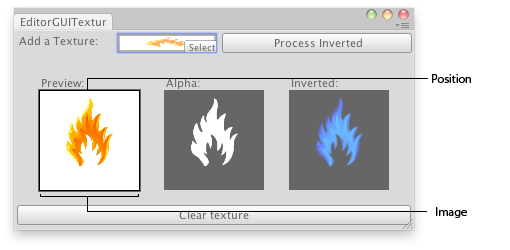

EditorGUI.DrawPreviewTexture
public static void DrawPreviewTexture(Rect position,
Texture image,
Material mat = null,
ScaleMode scaleMode = ScaleMode.StretchToFill,
float imageAspect = 0,
float mipLevel = -1,
Rendering.ColorWriteMask colorWriteMask = ColorWriteMask.All);
Parameters
| position | Rectangle on the screen to draw the texture within. | |
| image | Texture to display. | |
| mat | Material to be used when drawing the texture. | |
| scaleMode | How to scale the image when the aspect ratio of it doesn't fit the aspect ratio to be drawn within. | |
| imageAspect | Aspect ratio to use for the source image. If 0 (the default), the aspect ratio from the image is used. | |
| mipLevel | The mip-level to sample. If negative, the texture is sampled normally. Sets material _Mip property. | |
| colorWriteMask | Specifies which color components of image will get written. |
Description 描述
Draws the texture within a rectangle.
If mat is null (the default), an appropriate material will be chosen for a RGBM or doubleLDR lightmap or a normal map
and the fallback blit material will be chosen otherwise.

Preview Texture in an Editor Window.
// Load a texture, display the texture, display its alpha channel and // show a preview of the inverted texture using UnityEditor; using UnityEngine;
class EditorGUITextures : EditorWindow { Texture2D texture; Texture2D invertedTexture; bool showInverted = false;
[MenuItem("Examples/Texture Previewer")] static void Init() { var window = GetWindow<EditorGUITextures>("Texture Previewer"); window.position = new Rect(0, 0, 400, 200); window.Show(); }
void OnGUI() { texture = (Texture2D)EditorGUI.ObjectField(new Rect(3, 3, 200, 20), "Add a Texture:", texture, typeof(Texture2D)); if (GUI.Button(new Rect(208, 3, position.width - 210, 20), "Process Inverted")) { if (invertedTexture) DestroyImmediate(invertedTexture); //Copy the new texture invertedTexture = new Texture2D(texture.width, texture.height, texture.format, (texture.mipmapCount != 0)); for (int m = 0; m < texture.mipmapCount; m++) invertedTexture.SetPixels(texture.GetPixels(m), m); InvertColors(); showInverted = true; } if (texture) { EditorGUI.PrefixLabel(new Rect(25, 45, 100, 15), 0, new GUIContent("Preview:")); EditorGUI.DrawPreviewTexture(new Rect(25, 60, 100, 100), texture); EditorGUI.PrefixLabel(new Rect(150, 45, 100, 15), 0, new GUIContent("Alpha:")); EditorGUI.DrawTextureAlpha(new Rect(150, 60, 100, 100), texture); EditorGUI.PrefixLabel(new Rect(275, 45, 100, 15), 0, new GUIContent("Inverted:")); if (showInverted) EditorGUI.DrawPreviewTexture(new Rect(275, 60, 100, 100), invertedTexture); if (GUI.Button(new Rect(3, position.height - 25, position.width - 6, 20), "Clear texture")) { texture = EditorGUIUtility.whiteTexture; showInverted = false; } } else { EditorGUI.PrefixLabel( new Rect(3, position.height - 25, position.width - 6, 20), 0, new GUIContent("No texture found")); } }
void InvertColors() { for (int m = 0; m < invertedTexture.mipmapCount; m++) { Color[] c = invertedTexture.GetPixels(m); for (int i = 0; i < c.Length; i++) { c[i].r = 1 - c[i].r; c[i].g = 1 - c[i].g; c[i].b = 1 - c[i].b; } invertedTexture.SetPixels(c, m); } invertedTexture.Apply(); } }